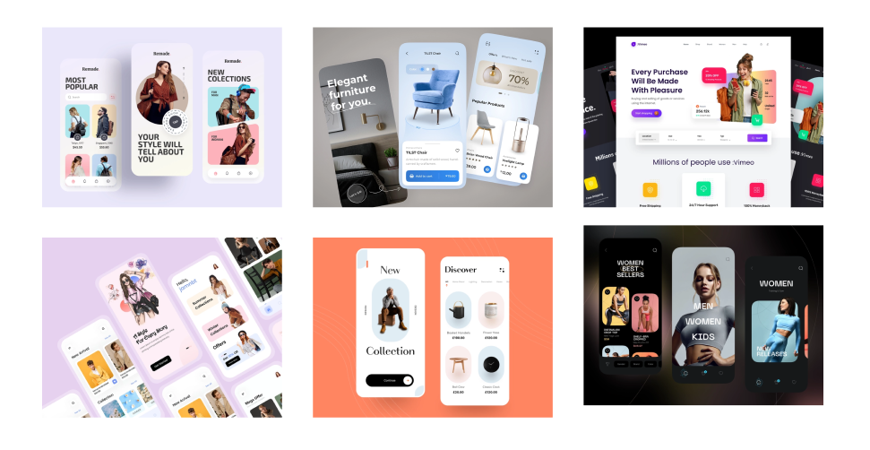
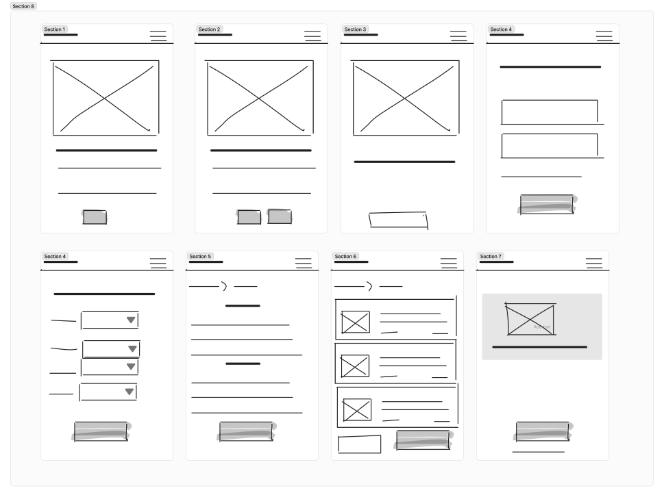
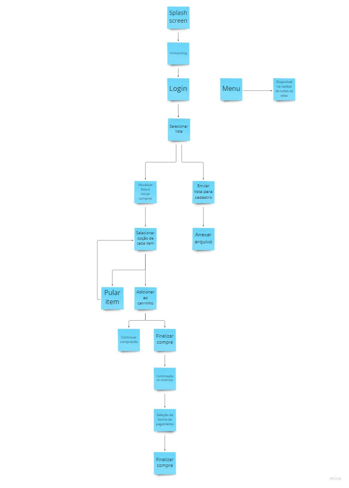

Papelarias Cor de Papel
Resumo
A rede de papelarias fictícia Cor de Papel identificou que perdeu muitos clientes para outras lojas em função das medidas de restrições sanitárias impostas pela pandemia da COVID 19. A rede de papelarias se viu despreparada para contornar essa adversidade do mercado por não atuar em nenhum canal de vendas online.
Elaborei uma solução que agregasse mais valor ao processo de compra de materiais escolares, oferecendo um diferencial no processo de compra e garantindo um maior faturamento ao negócio.
Criei um aplicativo que proporciona a compra de toda a sua lista de material escolar de forma unificada. Nele, seu processo de aquisição dos materiais escolares acontece passo a passo e de forma organizada.
Desafio
Todo início de ano é um momento de energias renovadas, muitos planos para o novo ano que se inicia e também o momento de realizar a compra de materiais escolares.
Com a flexibilização da pandemia, esse ano de 2022 em especial foi recheado de muita expectativa à volta das aulas presenciais com mais intensidade. Por um lado, as crianças e adolescentes empolgadíssimos e por outro, a maioria dos pais arrancando os cabelos para administrar as demais despesas desse período como IPVA, IPTU, seguros, etc.
Os pais precisam administrar as preferências dos filhos, as solicitações das escolas e o orçamento apertado. Com a inflação, alta do dólar e desemprego, muitas famílias estão com dificuldades de adquirir materias escolares. Com a dificuldade financeira no topo da lista, ainda têm o tempo gasto em orçamentos em diferentes estabelecimentos e a dificuldade de encontrar alguns itens específicos ou mais concorridos.
Como oferecer uma melhor
experiência na compra de materiais escolares?
Objetivo do projeto
O objetivo do projeto foi elaborar uma solução que possibilitasse a rede de papelarias Cor de Papel fidelizar os clientes oferencendo uma melhor experiência, garantindo um maior faturamento ao negócio.
Meu papel no projeto
Esse projeto foi desenvolvido de forma individual, sendo eu a responsável por todas as etapas de seu desenvolvimento.
Ferramentas usadas
As ferramentas utilizadas foram Figma, Miro, Maze, Google Forms e Google Meets.
Contexto e definição do problema
O mercado de materias escolares sofreu muito com a pandemia. No ano de 2020 ainda foi possível passar por todo esse ritual da compra de materiais escolares mas em 2021, com comércios fechados e aulas online, esse mercado teve uma retração de mais de 37%.
Já em 2022, segundo o presidente executivo da ABFIAE (Associação Brasileira de Fabricantes e Importadores de Artigos Escolares), Sidnei Bergamaschi, “temos reajustes em todas as categorias de materiais escolares, variando de 15% a 30%, em média”. Esse é um momento desafiador para os empresários que buscam potencializar o faturamento, e com os reajustes dos materiais, manter as condições atrativas para o consumidor.
Mas como alternativa a todo esse cenário, a pandemia nos trouxe um aumento expressivo das compras online. Uma comparação feita entre o primeiro trimestre de 2021 e o mesmo período em 2020, apontou um crescimento de 57,4%. Para o mercado de papelaria, esse crescimento foi de 31%. Essa é uma mudança definitiva no comportamento dos consumidores daqui para frente. Seja para os que já eram adeptos de compras online ou para aqueles que foram apresentados aos e-commerces por necessidade.
O mercado online para o setor de papelaria apresentou crescimento significativo e a Cor de Papel não possui um canal de vendas online.
Pesquisas
Desk Research
Realizei uma Desk Research para conhecer mais do mercado de papelaria e as dificuldades mais comuns encontradas por aqueles que realizam as compras. Baseada nessas informações construí uma Matriz CSD (certezas, suposições e dúvidas) e a proto persona.
Pesquisa Quantitativa
A pesquisa qualitativa foi realizada através de formulário online, com perguntas de múltipla escolha e pessoas recrutadas através das redes sociais. Ela teve como objetivo validar a proto persona e as suposições e dúvidas levantadas pela Matriz CSD. O formulário teve 37 respondentes onde busquei por pessoas com o perfil da proto persona e que fossem as responsáveis pela compra de materiais escolares para crianças e adolescentes. Ao lado apresento as principais hipóteses que validei na pesquisa e seus respectivos aprendizados:
Pesquisa Qualitativa
Com base nos aprendizados adquiridos, realizei entrevistas com usuários, utilizando vídeo chamada, para entender de forma mais profunda as dores do processo de compra e a preferência por lojas físicas. No total foram entrevistadas 6 pessoas. Duas pessoas que responderam o formulário e as demais foram também recrutadas através das redes sociais. Busquei por usuários que correspondessem ao perfil da persona.
As conclusões tiradas dessa etapa foram:
- A preferência por lojas físicas se dá pela possibilidade de verificar melhor a qualidade e tamanho dos materiais;
- O preço é o fator de maior peso no processo de compra;
- O tempo gasto em lojas físicas nos processos de pesquisa de preços, aguardar por atendimento e ter que se deslocar entre diversas lojas é um grande estressor do processo de compra;
- A compra dos itens mais caros como livros e mochilas são realizadas em lojas online.
Definição
Baseada em todos os dados adquiridos com as pesquisas (formulário e entrevistas) foi possível elaborar a Persona e o Mapa da Jornada do Usuário. Com esses artefatos, ficou mais clara a visualização das reais dores da persona e de que forma eu teria que alinhar as necessidades do usuário e do negócio. Apresento a persona da Sara e a jornada cumprida por ela na compra dos materiais escolares:

Depois de conhecer as reais necessidades e frustrações do usuário no processo, chegou a hora de pensar em soluções através da técnica How Might We (Como poderíamos).
Baseadas nas possíveis soluções elencadas no Como Poderíamos, usei a matriz Esforço x Impacto com objetivo de categorizar quais soluções teriam um equilíbrio interessante entre as variáveis para que pudesse determinar em qual solução iria trabalhar.
Geração de ideias
Baseada no resultado da matriz impacto x esforço, decidi priorizar uma solução que irá gerar mais valor para os usuários e também resultado direto no faturamento do cliente. Realizei um benchmarking para identificar soluções similares no mercado e as principais categorias de produtos oferecidos pelos e-commerces concorrentes.
Comecei um processo de ideação com lápis e papel para começar a visualizar possíveis soluções e depois disso, utilizei a ferramenta do Crazy Eights para criar diferentes versões das minhas ideias:
Prototipação
Nessa etapa comecei fazendo um moodboard de inspirações:
Construi um Wireframe de baixa fidelidade e criei o fluxo de telas para começar a dar corpo ao protótipo.
Wireframe
Fluxo de telas
Em seguida, criei o protótipo de média fidelidade que pode ser visualizado logo abaixo:
Teste com usuários
Com o protótipo de média fidelidade apresentado acima, foi realizado um teste de usabilidade para validação das funcionalidades. O teste foi realizado de forma remota e não moderada pelo app Maze contando com 19 usuários e 3 tarefas no seguinte contexto:
Imagine que você está no período onde precisa comprar os materiais escolares do seu/sua filho(a) e você encontrou um novo app para te ajudar neste processo. Você já baixou o app e agora seu objetivo é realizar a compra dos materiais escolares através dele.
1ª tarefa: Enviar a ula de material para cadastro
Objetivo: Identificar se o envio de novas ulas para cadastro poderiam ser realizadas sem necessidade de contato com o atendimento da loja.
2ª tarefa: Não comprar o item lápis
Objetivo: Testar se o fluxo de compra sequencial dos itens poderia ser alterado.
3ª tarefa: Entrar em contato com a loja
Objetivo: Entender se os dados de contato da loja estavam acessíveis caso o cliente precisasse de algum suporte.
Aprendizados
Através da análise do mapa de calor, foi possível avaliar o fluxo do usuário nas tarefas acima, onde cheguei as seguintes conclusões:
- Nas telas de onboarding houveram 30% de cliques fora do CTA;
- Antes de completarem a tarefa de “Enviar lista para cadastro”, a maioria tentou utilizar os filtros de seleção de lista;
- Na 2ª tarefa (Não comprar o item lápis), 60% dos usuários tentou realizar a ação de desmarcar o item antes de avançar para a próxima tela
- Na 3ª tarefa ficou claro que as informações de contato com a loja precisam estar mais visíveis para o usuário.
Design final
Styleguide
Antes de partir para a correção das telas, chegou a hora de definir a identidade visual do aplicativo. Abaixo estão ilustradas as cores, fontes, ícones e alguns dos componenetes criados. O principal produto comercializado neste aplicativo serão os materiais escolares. Por este motivo, escolhi o alto contraste entre o azul e o laranja. O azul que traz confiança e tranquilidade e o laranja que traz energia e alegria. As fontes também seguiram na mesma linha entre o sério e divertido. Os ícones utilizados foram do Material Design.
Protótipo Final
Depois dos aprendizados extraídos do teste de usabilidade, as telas que apresentaram algum tipo de dificuldade para o usuário foram ajustadas e o protótipo final com um fluxo mais harmônico e claro está finalizado abaixo:
Conclusões
Considero que a criação deste aplicativo solucionou, mesmo que de forma embrionária, algumas das dores dos pais/responsáveis pela compra de materiais escolares e permitiu a rede de papelarias Cor de Papel a fazer sua estreia no mercado online, canal de venda ainda não explorado por eles. Passar por todas essas etapas da construção de um produto pela primeira vez e sozinha foi extremamente desafiador e também esclarecedor. Tive muita dificuldades em algumas partes, outras menos. Esse foi meu primeiro projeto como UX Designer. Com ele, foi possível compreender melhor todo o processo de trabalho e a importância de cada etapa. E mais do que isso, ter certeza que, tanto o produto quanto nosso conhecimento, precisa estar sempre em evolução para entregar o melhor ao nossos clientes e usuários. Sei que tenho vários pontos a melhorar. Esse foi o primeiro! Mas essa experiência foi importantíssima para enxergar o processo de design como um todo e para me dar uma pequena amostra dos desafios que virão.